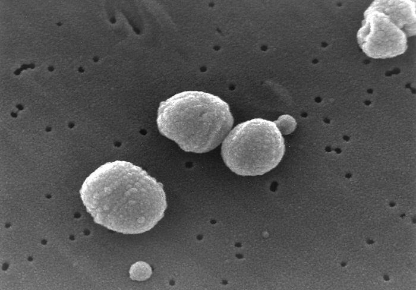
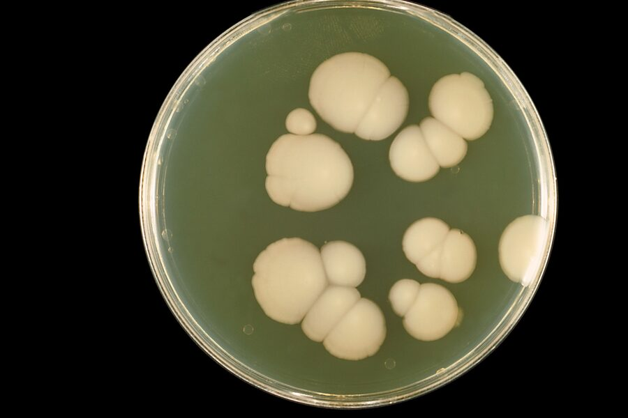

Pathogens
What the immune system has to deal with. Page 4 / 13Pathogens are anything that can cause disease: bacteria, viruses, fungi, parasites and prions. They live in air, water, soil, animals and on our skin — most microbes are harmless or beneficial, a few are highly dangerous.
Cocci (round bacteria)

Function: Round bacteria, often in clusters or chains (Staphylococci, Streptococci). Some are harmless guests, others cause pneumonia, skin or throat infections.
Depends on / Targets: Phagocytosed by neutrophils and macrophages; antibodies help tag them.
Rod bacteria

Function: Elongated bacteria like E. coli, Salmonella, tuberculosis bacilli. Multiply fast and can release toxins.
Depends on / Targets: Phagocytosed; intracellular species (TB) need T-cell help to be cleared.
Virus
Function: Not really alive: just genetic material in a shell. Sneaks into body cells and forces them to build new virus particles.
Depends on / Targets: Hunted by CD8 T cells and NK cells; antibodies bind free virus particles.
Fungus

Function: Eukaryotic microbes — yeasts or filaments (hyphae). Examples: Candida in mouth/gut, Aspergillus in lungs.
Depends on / Targets: Controlled by neutrophils, macrophages and Th17 cells.
Parasite
Function: From single-celled (Plasmodium → malaria) to worms. Lives in or on its host and damages it in the process.
Depends on / Targets: Often fought with IgE, eosinophils and mast cells; antibodies and Th2 responses are central.
Prion
Function: Not alive, not a virus — a misfolded protein that forces other proteins to misfold the same way. Causes diseases like Creutzfeldt-Jakob, BSE.
Depends on / Targets: Largely invisible to the immune system; no antibody defence.